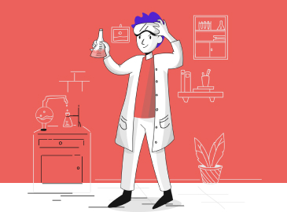
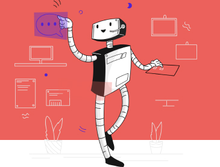
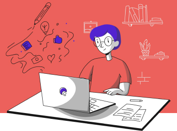

без проводов
Шлем работает без проводов. Не нужен ни компьютер, ни внешнее питание, ни большое помещение, чтобы расставить трекеры.

Без компьютера
Современным VR-шлемам нужен мощный компьютер, чтобы запускать игры. Наш шлем запускает игры из облака, поэтому просто наслаждайтесь.

До 10 часов работы
Несмотря на компактность и производительность, шлем может работать до 10 часов — даже, если вы играете в самые ресурсоемкие игры.
Сотни игр
Уже сейчас вам доступно более сотни игр: от высокобюджетных ААА-тайтлов до маленьких независимых проектов. Скоро их станет еще больше.
Почти даром
По сравнению с другими VR-шлемами наш стоит гораздо меньше. И вы существенно экономите на мощном компьютере.